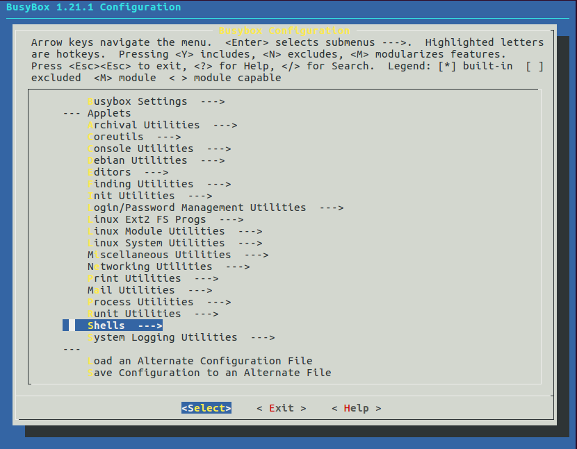
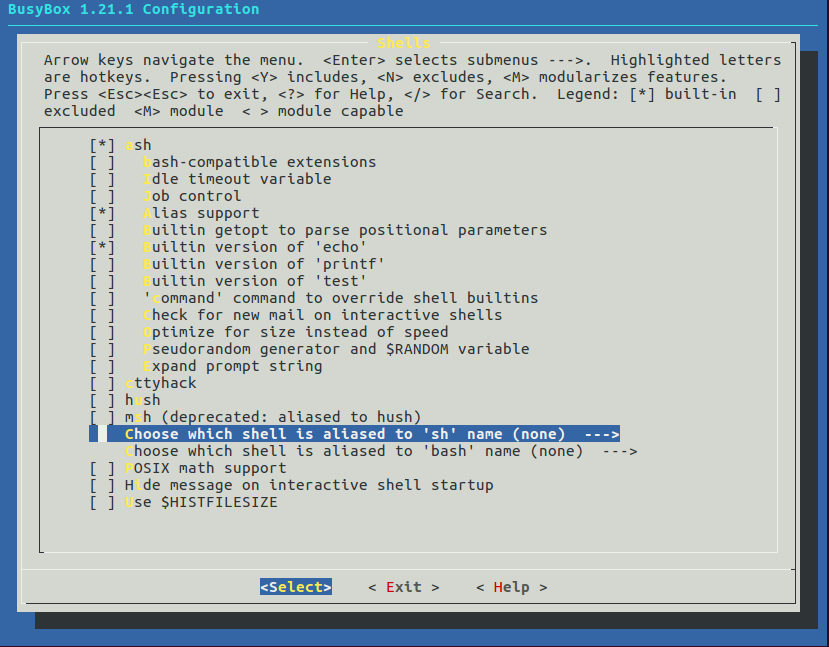
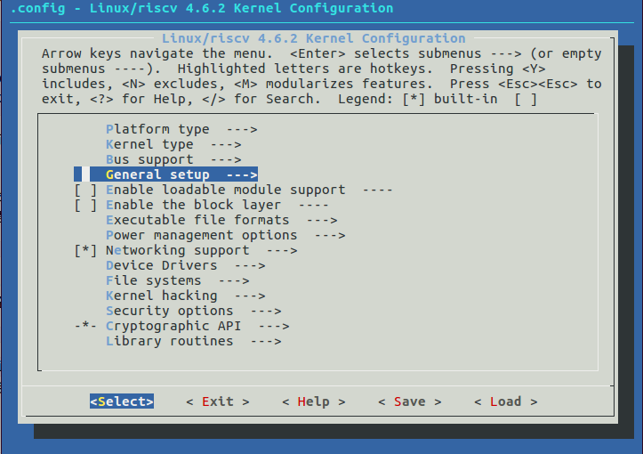
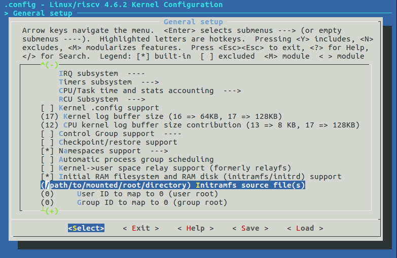
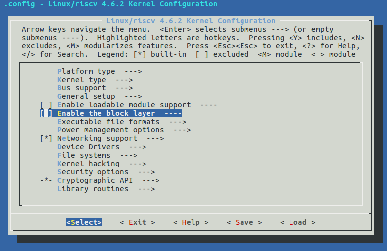
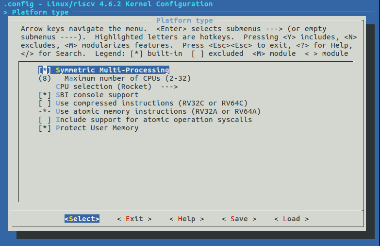
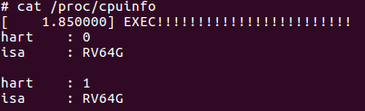

使用 spike 运行 riscv-linux
为了完成标题所示的内容，需要按照 riscv-tools 项目的 README 的指示进行操作。但是 riscv 目前分为 1.9 和 1.7 两个版本。相关的项目正围绕 1.9 进行活跃的开发，所以 README 所述的内容并不符合最新代码的实际情况。主要的问题有三点：
- bbl 需要将内核二进制文件（vmlinux）作为 payload 进行编译，而不是由 spike 通过命令行指定 vmlinux;
- spike 不再支持块设备，故 Linux 只能通过 initramfs 加载根文件系统；
- Linux 的版本要更新到 4.6.x（我用的 4.6.2），以匹配 riscv-tools 编译出来的高版本工具链。
由于饱受版本不一致的折磨，所以这里明确列出我所使用的相关项目的 commit 或版本号：
| 项目 | 版本信息 | 时间 |
|---|---|---|
| riscv-tools | commit cd78e37f72cfc2a452a0c11744586084fbae1dcd | 2017-01-05 |
| riscv-linux | commit 23bf08e7e74cbf877864734d6fffe36c6650fd47 | 2017-01-06 |
| Linux | 4.6.2 | - |
| Busybox | 1.21.1 | - |
接下来是具体的操作流程。
准备工具链
按照 riscv-tools 的 Quickstart 进行操作，生成编译内核所需要的工具链。这里备份一下关键操作：
sudo apt-get install autoconf automake autotools-dev curl libmpc-dev libmpfr-dev libgmp-dev gawk build-essential bison flex texinfo gperf libtool patchutils bc zlib1g-dev
git clone https://github.com/riscv/riscv-tools.git
cd riscv-tools
git submodule update --init --recursive
export RISCV=/path/to/install/riscv/toolchain
./build.sh
准备内核
按照 riscv-linux 的 README 的指示，获取内核代码，整合 riscv 相关代码。操作内容备份如下：
curl -L https://cdn.kernel.org/pub/linux/kernel/v4.x/linux-4.6.2.tar.xz | tar -xJ
cd linux-4.6.2
git init
git remote add -t master origin https://github.com/riscv/riscv-linux.git
git fetch
git checkout -f -t origin/master
编译 BusyBox
按照 riscv-tools 的 Build BusyBox 进行操作，获取 BusyBox 源码，配置并编译。关键操作备份如下：
curl -L http://busybox.net/downloads/busybox-1.21.1.tar.bz2 | tar -xj
cd busybox-1.21.1
make allnoconfig
之后按照 README 要求，在 .config 配置文件中将下面几项修改为相应的内容
CONFIG_STATIC=y
CONFIG_CROSS_COMPILER_PREFIX=riscv-linux-
CONFIG_FEATURE_INSTALLER=y
CONFIG_INIT=y
CONFIG_ASH=y
CONFIG_ASH_JOB_CONTROL=n
CONFIG_MOUNT=y
README 中提供的参考配置在我操作时是失效的，建议修改后输入 make menuconfig 在配置菜单里将常用的命令行工具选中。否则，BusyBox 启动后，只有 ash, mount, init 可以使用。尤其需要注意的是，当前默认配置下，busybox sh 是无效的，会提示 sh: applet not found.
需要在配置菜单里制定 sh （以及 bash）指向的是哪个 shell.


配置完成后，执行 make 进行编译。编译结束后，会在项目根目录生成 busybox 二进制程序。
准备根目录
按照 riscv-tools 的 Creating a Root Disk Image 进行操作，到拷贝 busybox 到 bin 目录为止。关键操作备份如下：
dd if=/dev/zero of=root.bin bs=1M count=64
mkfs.ext2 -F root.bin
mkdir mnt
sudo mount -o loop root.bin mnt
cd mnt/
mkdir -p bin etc dev lib proc sbin sys tmp usr usr/bin usr/lib usr/sbin
cp path/to/busybox bin/
之后的配置似乎并不能在 initramfs 中起作用。initramfs 会调用 /init, 我的根目录结构调整后如下所示：
.
├── bin
│ ├── ash -> busybox
│ └── busybox
├── dev
│ ├── console
│ ├── null
│ ├── tty2 -> null
│ ├── tty3 -> null
│ └── tty4 -> null
├── etc
│ └── init.d
│ └── rcS -> ../../dev/null
├── init
├── lib
├── proc
├── sbin
├── sys
├── tmp
└── usr
├── bin
├── lib
└── sbin
init 是添加了可执行权限的 shell 脚本，内容如下：
#!/bin/ash
/bin/busybox --install
exec ash
若有符号链接 sh -> busybox 且 init 脚本第一行是 #!/bin/sh, 则 busybox 一定要配置过 sh 的指向 shell.
否则，busybox 会报错称找不到 sh 并退出。由于第一个进程退出，内核会发生错误。
若没有 console 设备，则内核会提示无法启动初始 console, 无法提供交互的命令行界面。console 设备的创建方法如下：
sudo mknod console c 5 1
tty2, tty3, tty4 以及 rcS 会提示找不到并报错，从网上搜索的资料来看，这些可以通过符号链接到 null 来忽略。null 设备的创建方法如下：
sudo mknod -m 666 null c 1 3
/bin/busybox --install 会为所有的 applet 创建对应的符号链接，这样不需要写 busybox 就能直接使用 shell 命令了。按照 busybox 的报错信息，这里需要用绝对路径进行调用。
编译 Linux
执行 make ARCH=riscv menuconfig 打开配置菜单。在配置菜单首页，首先进入 General setup.

在 General setup 页面，启用 Initial RAM filesystem and RAM disk (initramfs/initrd) support
并在下一行按空格填写到 initramfs 根目录的绝对路径。

initramfs 在实际应用中，只是作为挂在真正根目录之前的临时目录存在的，所以内核完成 initramfs 的载入后，会自动去寻找真正的根目录。但是由于 spike 不提供块设备模拟，所以会因为无法访问块设备而造成 kernel panic. 所以，还需要关闭对块设备的支持（反正也没有了），让内核一直停留在 initramfs 下。在配置菜单首页，取消 Enable the block layer.

完成配置后，编译 Linux:
make ARCH=riscv vmlinux
在项目根目录会生成 vmlinux 二进制文件。
编译 bbl (Berkeley Boot Loader)
虽然一开始编译 riscv-tools 时已经生成 bbl 了，但是其 payload 并非真正的 vmlinux, 这里要重新编译带 vmlinux payload 的 bbl. 这个链接里提供了编译方法，具体操作备份如下：
export RISCV=/path/to/your/already/built/toolchain
cd riscv-tools/riscv-pk
mkdir build.with.payload
cd build.with.payload
../configure --prefix=$RISCV/riscv64-unknown-elf \
--host=riscv64-unknown-elf \
--with-payload=/path/to/vmlinux
之后在当前目录直接 make. bbl 直接生成在这个目录下。
运行及其他
执行 spike bbl 即可启动 riscv-linux (自行保证文件可被搜索到)。
在 General setup 界面，选中 Symmetric Multi-Processing 开启对多核的支持。

重新编译 vmlinux 和 bbl 后，执行 spike -p2 bbl 即可以模拟多核。可以通过 /proc/cpuinfo 文件查看核心信息。通过 mount -t proc proc /proc 挂载 /proc 实现该功能。

参考资料
- riscv-tools https://github.com/riscv/riscv-tools
- riscv-linux https://github.com/riscv/riscv-linux
- https://github.com/riscv/riscv-pk/issues/18 明确了当前 spike 的问题并提示了 initramfs 的折中方案。
- http://unix.stackexchange.com/questions/235281/is-there-a-way-to-get-linux-to-treat-an-initramfs-as-the-final-root-filesystem 提供了停留在 initramfs 的解决方案。
- https://forums.xilinx.com/t5/Embedded-Linux/Boot-halts-at-quot-Warning-unable-to-open-an-initial-console/td-p/57072 提供了解决无法启动 initial console 的解决方案。
- http://lists.busybox.net/pipermail/busybox/2008-May/065574.html 提供了忽视 tty2,3,4 的解决方案。
- http://stackoverflow.com/questions/37849574/how-to-rebuild-bbl-with-payload-option 提供了正确的 bbl 编译方法。
题外话
rocket chip 在 Zynq fpga 开发板上的部署项目 fpga-zynq 当前的 README (commit 8d5981cdab99e8af9ab462a972ad2efcd25a0dc5) 称启动 riscv-linux 的命令为：
root@zynq:~# ./fesvr-zynq +disk=/sdcard/riscv/root.bin bbl /sdcard/riscv/vmlinux
根据上面的经验，加上测试，果然，实际只需要这样就可以启动：
root@zynq:~# ./fesvr-zynq bbl
真正的内核文件 (vmlinux) 实际在 bbl 中。